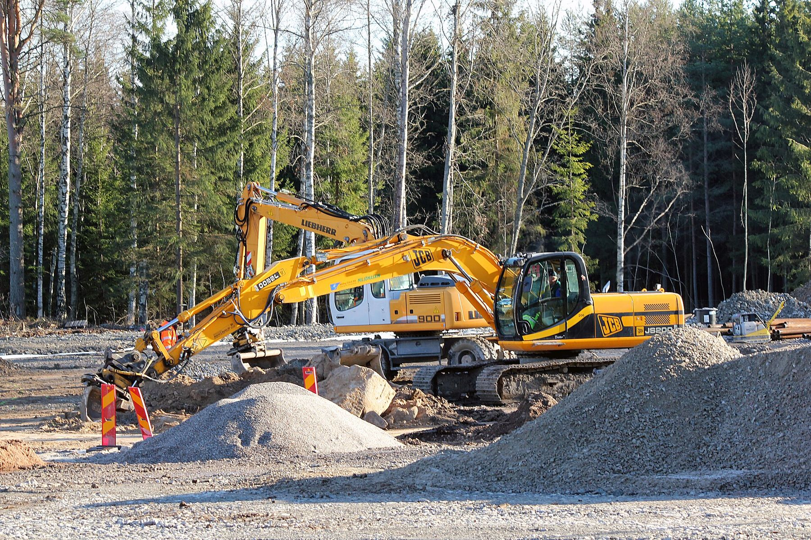
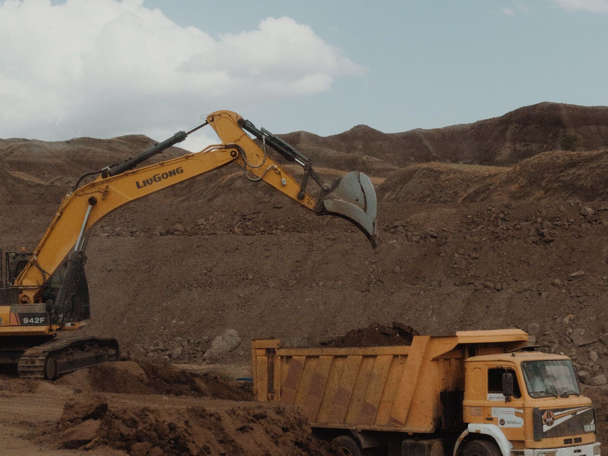
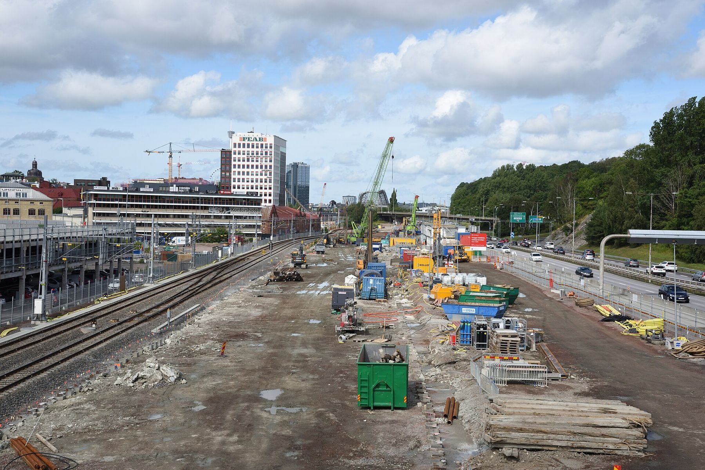
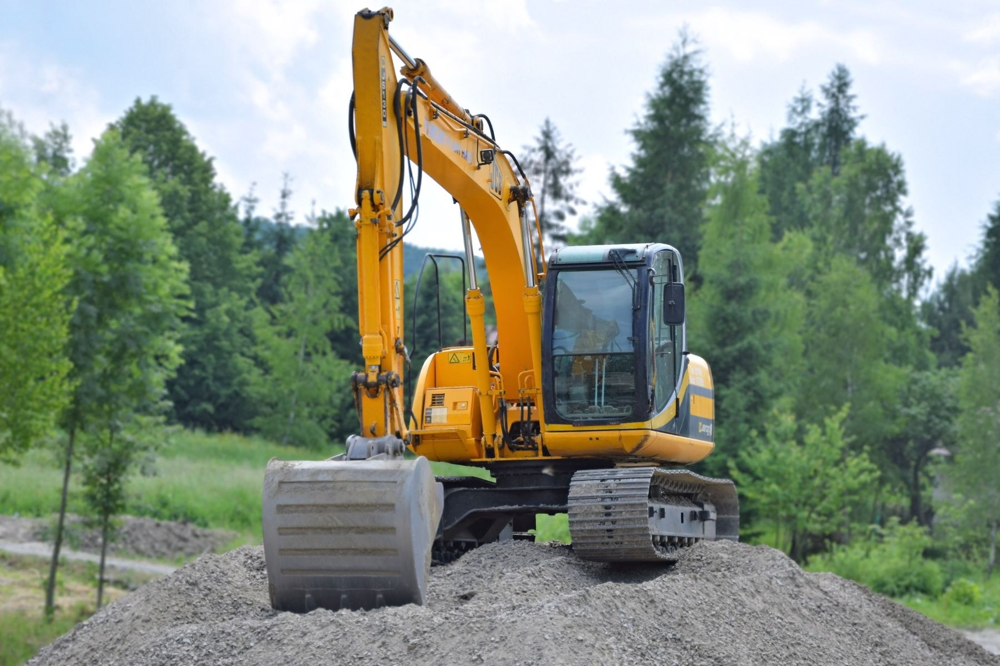
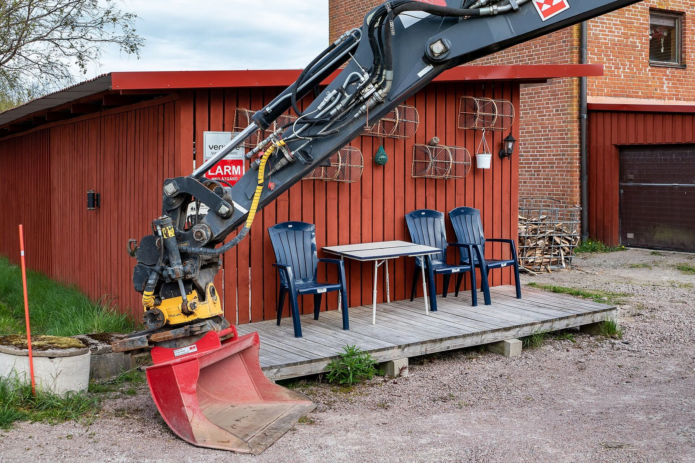

Maskinentreprenör i Göteborg
Markarbeten och maskintjänster i Göteborg
Antonsson Entreprenad gräver, dränerar och bygger grunder åt både företag och privatpersoner – i Göteborg med omnejd.
- 2024Medlem i Maskinentreprenörerna
- KollektivavtalEntreprenadmaskin & Tjänstemän
- OlskrokenBas mitt i Göteborg

Tjänster
Det här gör vi
Sex vanliga markjobb – och fler under ”Vi utför också”. Klicka på en tjänst för att läsa mer.
 01
01VA-arbeten
Nya ledningar, byten och renoveringar av vatten och avlopp.
Läs mer 02
02Dräneringar
Torr grund och tomt – dränering runt hus, gårdar och ytor.
Läs mer 03
03Husgrunder
Platta på mark, källare eller krypgrund – för hus, garage och förråd.
Läs mer 04
04Parkeringsytor
Uppfarter och parkeringar som håller år efter år.
Läs mer
05Schakt och transport
Schakt, massor och transporter – planerat i ett och samma flöde.
Läs mer 06
06Infrastruktur och vägar
Nya vägar, ombyggnad och reparation – från uppfart till större projekt.
Läs mer
Vi utför också
Hela vägen
Från första spadtaget till färdig yta
VA-arbeten, dräneringar, husgrunder, parkeringsytor, sten- och murarbeten, schakt och transport samt vägar. Vi tar jobbet hela vägen – och lämnar tomten städad efter oss.


Maskin med förare
Per timme eller per dag
Behöver du bara en maskin och någon som kan köra den? Vi kommer ut och hjälper till.
- Grävning
- Lastning
- Markplanering
- Flytt av massor
- Per timme eller dag
Om oss
Ett lokalt maskinföretag från Olskroken
Antonsson Entreprenad AB är ett mark- och maskinföretag med bas i Olskroken i Göteborg. Vi har kollektivavtal och är medlemmar i Maskinentreprenörerna sedan 2024. Vi planerar noggrant, håller det vi lovar och följer upp arbetet tills det är klart.
Så går det till
- Du hör av dig Berätta kort vad som ska göras och var.
- Vi tittar på platsen Så att vi ser marken och förutsättningarna.
- Du får en offert Med vad som ingår och vad det kostar.
- Vi utför jobbet Och följer upp tills allt är klart och återställt.

Frågor och svar
Vanliga frågor
Vilka jobb tar ni?
Mark- och anläggningsarbeten: VA, dräneringar, husgrunder, parkeringsytor, sten- och murarbeten, schakt och transport samt vägar. Du kan också hyra maskin med förare.
Kan jag få en offert?
Ja. Fyll i formuläret, ring 070-935 53 57 eller mejla antonssonentreprenad@gmail.com. Oftast tittar vi på platsen innan vi ger ett pris.
Var jobbar ni?
Vi utgår från Olskroken i Göteborg och jobbar i Göteborg med omnejd. Ligger jobbet längre bort, säg var, så svarar vi om vi kan ta det.
Har ni kollektivavtal?
Ja, vi har kollektivavtal – Entreprenadmaskinavtalet och Tjänstemannaavtalet – och är medlemmar i Maskinentreprenörerna sedan 2024.
Gäller ROT-avdrag?
ROT-avdraget kan gälla arbetskostnaden för till exempel dränering och VA vid ditt hus. Vi går igenom vad som gäller för ditt jobb i offerten.
Begär offert
Tack! Vi har fått din förfrågan.
Vi hör av oss så snart vi kan. Brådskar det, ring 070-935 53 57.
Markentreprenör i Göteborg
Antonsson Entreprenad är en markentreprenör med bas i Olskroken som jobbar i hela Göteborgsregionen. Vi gör VA-arbeten och dräneringar för villor och fastigheter, och bygger husgrunder för hus, garage och lokaler.
Vi anlägger också parkeringsytor, utför sten- och murarbeten, sköter schakt och transport och bygger och reparerar vägar. Behöver du bara en maskin kan du hyra maskin med förare. Ring 070-935 53 57 eller begär en offert.
Hitta hit
Antonsson Entreprenad AB, Olskroksgatan 4, 416 66 Göteborg.